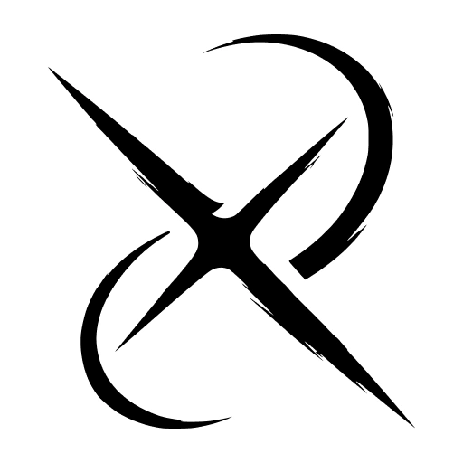

<!DOCTYPE html>
<html lang="en">
<head>
  <meta charset="UTF-8" />
  <meta name="viewport" content="width=device-width, initial-scale=1.0" />
  <title>Crux — End Context-Switching. Start Shipping Faster.</title>
  <meta name="description" content="Crux collapses fragmented communication loops into a single, real-time collaboration hub where GitHub PRs, Linear tasks, and Slack discussions converge." />
  <script src="https://cdn.tailwindcss.com"></script>
  <script src="https://unpkg.com/react@18/umd/react.production.min.js" crossorigin></script>
  <script src="https://unpkg.com/react-dom@18/umd/react-dom.production.min.js" crossorigin></script>
  <script src="https://unpkg.com/@babel/standalone/babel.min.js"></script>
  <link href="https://fonts.googleapis.com/css2?family=JetBrains+Mono:wght@400;500;600&family=Inter:wght@300;400;500;600;700;800;900&display=swap" rel="stylesheet" />
  <script>
    tailwind.config = {
      theme: {
        extend: {
          colors: {
            crux: {
              bg: '#0a0a0a',
              surface: '#121212',
              surfaceHover: '#1a1a1a',
              accent: '#00d9ff',
              accentDim: '#00a3bf',
              accentGlow: 'rgba(0, 217, 255, 0.15)',
              text: '#fafafa',
              muted: '#a0a0a0',
              border: '#2a2a2a',
              green: '#22c55e',
              amber: '#f59e0b',
              red: '#ef4444',
              purple: '#a78bfa',
            }
          },
          fontFamily: {
            sans: ['Inter', 'system-ui', 'sans-serif'],
            mono: ['JetBrains Mono', 'monospace'],
          }
        }
      }
    }
  </script>
  <style>
    *, *::before, *::after { box-sizing: border-box; margin: 0; padding: 0; }
    html { scroll-behavior: smooth; }
    body { background: #0a0a0a; color: #fafafa; font-family: 'Inter', system-ui, sans-serif; }

    ::-webkit-scrollbar { width: 6px; }
    ::-webkit-scrollbar-track { background: #0a0a0a; }
    ::-webkit-scrollbar-thumb { background: #2a2a2a; border-radius: 3px; }
    ::-webkit-scrollbar-thumb:hover { background: #3a3a3a; }

    /* ── PARTICLES ── */
    @keyframes drift {
      0%   { transform: translate(0, 0) scale(1); opacity: 0; }
      10%  { opacity: var(--opacity); }
      90%  { opacity: var(--opacity); }
      100% { transform: translate(var(--dx), var(--dy)) scale(0.3); opacity: 0; }
    }
    .particle {
      position: absolute;
      border-radius: 50%;
      background: #00d9ff;
      pointer-events: none;
      animation: drift var(--duration) linear infinite;
      animation-delay: var(--delay);
      left: var(--x);
      top: var(--y);
      width: var(--size);
      height: var(--size);
    }

    /* ── HERO GRADIENT MESH ── */
    @keyframes gradientShift {
      0%   { background-position: 0% 50%; }
      50%  { background-position: 100% 50%; }
      100% { background-position: 0% 50%; }
    }
    .hero-gradient {
      background: radial-gradient(ellipse at 20% 50%, rgba(0, 217, 255, 0.08) 0%, transparent 50%),
                  radial-gradient(ellipse at 80% 20%, rgba(167, 139, 250, 0.06) 0%, transparent 50%),
                  radial-gradient(ellipse at 50% 80%, rgba(0, 217, 255, 0.04) 0%, transparent 50%),
                  #0a0a0a;
      background-size: 200% 200%;
      animation: gradientShift 20s ease infinite;
    }

    /* ── GLOW EFFECTS ── */
    @keyframes pulse-glow {
      0%, 100% { box-shadow: 0 0 20px rgba(0, 217, 255, 0), 0 0 60px rgba(0, 217, 255, 0); }
      50%      { box-shadow: 0 0 20px rgba(0, 217, 255, 0.15), 0 0 60px rgba(0, 217, 255, 0.05); }
    }
    .glow-pulse { animation: pulse-glow 3s ease-in-out infinite; }

    @keyframes border-glow {
      0%, 100% { border-color: rgba(0, 217, 255, 0.1); }
      50%      { border-color: rgba(0, 217, 255, 0.3); }
    }
    .border-glow { animation: border-glow 4s ease-in-out infinite; }

    /* ── SCROLL REVEAL ── */
    @keyframes fadeInUp {
      from { opacity: 0; transform: translateY(30px); }
      to   { opacity: 1; transform: translateY(0); }
    }
    .reveal {
      opacity: 0;
      transform: translateY(30px);
      transition: opacity 0.6s ease-out, transform 0.6s ease-out;
    }
    .reveal.visible {
      opacity: 1;
      transform: translateY(0);
    }

    /* ── HERO BADGE ── */
    @keyframes shimmer {
      0%   { background-position: -200% 0; }
      100% { background-position: 200% 0; }
    }
    .shimmer-badge {
      background: linear-gradient(90deg, transparent, rgba(0,217,255,0.08), transparent);
      background-size: 200% 100%;
      animation: shimmer 3s linear infinite;
    }

    /* ── COCKPIT PREVIEW ANIMATION ── */
    @keyframes float {
      0%, 100% { transform: translateY(0px) rotateX(2deg); }
      50%      { transform: translateY(-10px) rotateX(2deg); }
    }
    .float-anim { animation: float 6s ease-in-out infinite; }

    /* ── GRID LINES (background decoration) ── */
    .grid-bg {
      background-image:
        linear-gradient(rgba(0, 217, 255, 0.03) 1px, transparent 1px),
        linear-gradient(90deg, rgba(0, 217, 255, 0.03) 1px, transparent 1px);
      background-size: 60px 60px;
    }

    /* ── TYPING CURSOR ── */
    @keyframes blink {
      0%, 100% { opacity: 1; }
      50%      { opacity: 0; }
    }
    .cursor-blink { animation: blink 1s step-end infinite; }

    /* ── INTEGRATION ORBIT ── */
    @keyframes orbit {
      from { transform: rotate(0deg) translateX(120px) rotate(0deg); }
      to   { transform: rotate(360deg) translateX(120px) rotate(-360deg); }
    }

    /* ── COCKPIT STYLES (for embedded app) ── */
    .cockpit-body { overflow: hidden; }
    .pr-card-active { border-left: 2px solid #00d9ff !important; background: #1a1a1a !important; }
    .diff-add { background: rgba(34, 197, 94, 0.08); border-left: 3px solid #22c55e; }
    .diff-del { background: rgba(239, 68, 68, 0.08); border-left: 3px solid #ef4444; }
    .diff-hunk { background: rgba(0, 217, 255, 0.05); color: #00d9ff; }
    .diff-normal { border-left: 3px solid transparent; }

    @keyframes progress-fill { from { width: 0; } }
    .progress-animated { animation: progress-fill 800ms ease-out; }

    @keyframes spin-slow { to { transform: rotate(360deg); } }
    .spin-slow { animation: spin-slow 2s linear infinite; }

    /* modal */
    @keyframes modalFadeIn { from { opacity: 0; } to { opacity: 1; } }
    @keyframes modalSlideUp { from { opacity: 0; transform: translateY(20px) scale(0.97); } to { opacity: 1; transform: translateY(0) scale(1); } }
    .modal-overlay { animation: modalFadeIn 150ms ease-out; }
    .modal-content { animation: modalSlideUp 200ms ease-out; }

    /* ── NUMBER COUNTER ── */
    @keyframes countUp {
      from { opacity: 0; transform: translateY(10px); }
      to   { opacity: 1; transform: translateY(0); }
    }
  </style>
</head>
<body>
  <div id="root"></div>

  <script type="text/babel">
    const { useState, useMemo, useCallback, useEffect, useRef } = React;

    // ════════════════════════════════════════════════════════════════
    //  SECTION 1:  LANDING PAGE
    // ════════════════════════════════════════════════════════════════

    // ── Particles Background ──
    function Particles({ count = 30, fixed = false }) {
      const particles = useMemo(() =>
        Array.from({ length: count }, (_, i) => ({
          id: i,
          style: {
            '--x': `${Math.random() * 100}%`,
            '--y': `${Math.random() * 100}%`,
            '--dx': `${(Math.random() - 0.5) * 300}px`,
            '--dy': `${(Math.random() - 0.5) * 300}px`,
            '--duration': `${18 + Math.random() * 30}s`,
            '--delay': `${-Math.random() * 25}s`,
            '--opacity': `${0.04 + Math.random() * 0.04}`,
            '--size': `${2 + Math.random() * 3}px`,
          },
        })),
      [count]);

      return (
        <div className={`${fixed ? 'fixed' : 'absolute'} inset-0 overflow-hidden pointer-events-none z-0`} aria-hidden="true">
          {particles.map(p => <div key={p.id} className="particle" style={p.style} />)}
        </div>
      );
    }

    // ── Scroll Reveal Hook ──
    function useReveal() {
      const ref = useRef(null);
      useEffect(() => {
        const el = ref.current;
        if (!el) return;
        const observer = new IntersectionObserver(
          ([entry]) => { if (entry.isIntersecting) el.classList.add('visible'); },
          { threshold: 0.15 }
        );
        observer.observe(el);
        return () => observer.disconnect();
      }, []);
      return ref;
    }

    function Reveal({ children, className = "", delay = 0 }) {
      const ref = useReveal();
      return (
        <div ref={ref} className={`reveal ${className}`} style={{ transitionDelay: `${delay}ms` }}>
          {children}
        </div>
      );
    }

    // ── SVG Icons ──
    const Icon = ({ d, size = 16, className = "" }) => (
      <svg width={size} height={size} viewBox="0 0 24 24" fill="none" stroke="currentColor"
        strokeWidth="2" strokeLinecap="round" strokeLinejoin="round" className={className}>
        <path d={d} />
      </svg>
    );

    const Icons = {
      Search: (p) => <Icon {...p} d="M21 21l-6-6m2-5a7 7 0 11-14 0 7 7 0 0114 0z" />,
      GitPR: (p) => (
        <svg width={p.size||16} height={p.size||16} viewBox="0 0 24 24" fill="none" stroke="currentColor"
          strokeWidth="2" strokeLinecap="round" strokeLinejoin="round" className={p.className||""}>
          <circle cx="18" cy="18" r="3"/><circle cx="6" cy="6" r="3"/>
          <path d="M13 6h3a2 2 0 012 2v7"/><line x1="6" y1="9" x2="6" y2="21"/>
        </svg>
      ),
      Check: (p) => <Icon {...p} d="M20 6L9 17l-5-5" />,
      X: (p) => <Icon {...p} d="M18 6L6 18M6 6l12 12" />,
      Clock: (p) => (
        <svg width={p.size||16} height={p.size||16} viewBox="0 0 24 24" fill="none" stroke="currentColor"
          strokeWidth="2" strokeLinecap="round" strokeLinejoin="round" className={p.className||""}>
          <circle cx="12" cy="12" r="10"/><polyline points="12 6 12 12 16 14"/>
        </svg>
      ),
      MessageCircle: (p) => (
        <svg width={p.size||16} height={p.size||16} viewBox="0 0 24 24" fill="none" stroke="currentColor"
          strokeWidth="2" strokeLinecap="round" strokeLinejoin="round" className={p.className||""}>
          <path d="M21 11.5a8.38 8.38 0 01-.9 3.8 8.5 8.5 0 01-7.6 4.7 8.38 8.38 0 01-3.8-.9L3 21l1.9-5.7a8.38 8.38 0 01-.9-3.8 8.5 8.5 0 014.7-7.6 8.38 8.38 0 013.8-.9h.5a8.48 8.48 0 018 8v.5z"/>
        </svg>
      ),
      GitBranch: (p) => (
        <svg width={p.size||16} height={p.size||16} viewBox="0 0 24 24" fill="none" stroke="currentColor"
          strokeWidth="2" strokeLinecap="round" strokeLinejoin="round" className={p.className||""}>
          <line x1="6" y1="3" x2="6" y2="15"/><circle cx="18" cy="6" r="3"/>
          <circle cx="6" cy="18" r="3"/><path d="M18 9a9 9 0 01-9 9"/>
        </svg>
      ),
      Play: (p) => <Icon {...p} d="M5 3l14 9-14 9V3z" />,
      File: (p) => (
        <svg width={p.size||16} height={p.size||16} viewBox="0 0 24 24" fill="none" stroke="currentColor"
          strokeWidth="2" strokeLinecap="round" strokeLinejoin="round" className={p.className||""}>
          <path d="M14 2H6a2 2 0 00-2 2v16a2 2 0 002 2h12a2 2 0 002-2V8z"/>
          <polyline points="14 2 14 8 20 8"/>
        </svg>
      ),
      Brain: (p) => (
        <svg width={p.size||16} height={p.size||16} viewBox="0 0 24 24" fill="none" stroke="currentColor"
          strokeWidth="2" strokeLinecap="round" strokeLinejoin="round" className={p.className||""}>
          <path d="M9.5 2A2.5 2.5 0 0112 4.5v15a2.5 2.5 0 01-4.96.44A2.5 2.5 0 015.5 17a2.5 2.5 0 01-1-4.74A2.5 2.5 0 014 10a2.5 2.5 0 013-2.45A2.5 2.5 0 019.5 2z"/>
          <path d="M14.5 2A2.5 2.5 0 0012 4.5v15a2.5 2.5 0 004.96.44A2.5 2.5 0 0018.5 17a2.5 2.5 0 001-4.74A2.5 2.5 0 0020 10a2.5 2.5 0 00-3-2.45A2.5 2.5 0 0014.5 2z"/>
        </svg>
      ),
      Slack: (p) => (
        <svg width={p.size||16} height={p.size||16} viewBox="0 0 24 24" fill="currentColor" className={p.className||""}>
          <path d="M5.042 15.165a2.528 2.528 0 0 1-2.52 2.523A2.528 2.528 0 0 1 0 15.165a2.527 2.527 0 0 1 2.522-2.52h2.52v2.52zM6.313 15.165a2.527 2.527 0 0 1 2.521-2.52 2.527 2.527 0 0 1 2.521 2.52v6.313A2.528 2.528 0 0 1 8.834 24a2.528 2.528 0 0 1-2.521-2.522v-6.313zM8.834 5.042a2.528 2.528 0 0 1-2.521-2.52A2.528 2.528 0 0 1 8.834 0a2.528 2.528 0 0 1 2.521 2.522v2.52H8.834zM8.834 6.313a2.528 2.528 0 0 1 2.521 2.521 2.528 2.528 0 0 1-2.521 2.521H2.522A2.528 2.528 0 0 1 0 8.834a2.528 2.528 0 0 1 2.522-2.521h6.312zM18.956 8.834a2.528 2.528 0 0 1 2.522-2.521A2.528 2.528 0 0 1 24 8.834a2.528 2.528 0 0 1-2.522 2.521h-2.522V8.834zM17.688 8.834a2.528 2.528 0 0 1-2.523 2.521 2.527 2.527 0 0 1-2.52-2.521V2.522A2.527 2.527 0 0 1 15.165 0a2.528 2.528 0 0 1 2.523 2.522v6.312zM15.165 18.956a2.528 2.528 0 0 1 2.523 2.522A2.528 2.528 0 0 1 15.165 24a2.527 2.527 0 0 1-2.52-2.522v-2.522h2.52zM15.165 17.688a2.527 2.527 0 0 1-2.52-2.523 2.526 2.526 0 0 1 2.52-2.52h6.313A2.527 2.527 0 0 1 24 15.165a2.528 2.528 0 0 1-2.522 2.523h-6.313z"/>
        </svg>
      ),
      ChevronRight: (p) => <Icon {...p} d="M9 18l6-6-6-6" />,
      Shield: (p) => <Icon {...p} d="M12 22s8-4 8-10V5l-8-3-8 3v7c0 6 8 10 8 10z" />,
      Zap: (p) => <Icon {...p} d="M13 2L3 14h9l-1 8 10-12h-9l1-8z" />,
      ExternalLink: (p) => (
        <svg width={p.size||16} height={p.size||16} viewBox="0 0 24 24" fill="none" stroke="currentColor"
          strokeWidth="2" strokeLinecap="round" strokeLinejoin="round" className={p.className||""}>
          <path d="M18 13v6a2 2 0 01-2 2H5a2 2 0 01-2-2V8a2 2 0 012-2h6"/>
          <polyline points="15 3 21 3 21 9"/><line x1="10" y1="14" x2="21" y2="3"/>
        </svg>
      ),
      Merge: (p) => (
        <svg width={p.size||16} height={p.size||16} viewBox="0 0 24 24" fill="none" stroke="currentColor"
          strokeWidth="2" strokeLinecap="round" strokeLinejoin="round" className={p.className||""}>
          <circle cx="18" cy="18" r="3"/><circle cx="6" cy="6" r="3"/>
          <path d="M6 21V9a9 9 0 009 9"/>
        </svg>
      ),
      ArrowRight: (p) => <Icon {...p} d="M5 12h14M12 5l7 7-7 7" />,
      Layout: (p) => (
        <svg width={p.size||16} height={p.size||16} viewBox="0 0 24 24" fill="none" stroke="currentColor"
          strokeWidth="2" strokeLinecap="round" strokeLinejoin="round" className={p.className||""}>
          <rect x="3" y="3" width="18" height="18" rx="2" ry="2"/><line x1="3" y1="9" x2="21" y2="9"/><line x1="9" y1="21" x2="9" y2="9"/>
        </svg>
      ),
      Globe: (p) => (
        <svg width={p.size||16} height={p.size||16} viewBox="0 0 24 24" fill="none" stroke="currentColor"
          strokeWidth="2" strokeLinecap="round" strokeLinejoin="round" className={p.className||""}>
          <circle cx="12" cy="12" r="10"/><line x1="2" y1="12" x2="22" y2="12"/>
          <path d="M12 2a15.3 15.3 0 014 10 15.3 15.3 0 01-4 10 15.3 15.3 0 01-4-10 15.3 15.3 0 014-10z"/>
        </svg>
      ),
      Users: (p) => (
        <svg width={p.size||16} height={p.size||16} viewBox="0 0 24 24" fill="none" stroke="currentColor"
          strokeWidth="2" strokeLinecap="round" strokeLinejoin="round" className={p.className||""}>
          <path d="M17 21v-2a4 4 0 00-4-4H5a4 4 0 00-4 4v2"/><circle cx="9" cy="7" r="4"/>
          <path d="M23 21v-2a4 4 0 00-3-3.87"/><path d="M16 3.13a4 4 0 010 7.75"/>
        </svg>
      ),
      Terminal: (p) => (
        <svg width={p.size||16} height={p.size||16} viewBox="0 0 24 24" fill="none" stroke="currentColor"
          strokeWidth="2" strokeLinecap="round" strokeLinejoin="round" className={p.className||""}>
          <polyline points="4 17 10 11 4 5"/><line x1="12" y1="19" x2="20" y2="19"/>
        </svg>
      ),
      GitHub: (p) => (
        <svg width={p.size||16} height={p.size||16} viewBox="0 0 24 24" fill="currentColor" className={p.className||""}>
          <path d="M12 0c-6.626 0-12 5.373-12 12 0 5.302 3.438 9.8 8.207 11.387.599.111.793-.261.793-.577v-2.234c-3.338.726-4.033-1.416-4.033-1.416-.546-1.387-1.333-1.756-1.333-1.756-1.089-.745.083-.729.083-.729 1.205.084 1.839 1.237 1.839 1.237 1.07 1.834 2.807 1.304 3.492.997.107-.775.418-1.305.762-1.604-2.665-.305-5.467-1.334-5.467-5.931 0-1.311.469-2.381 1.236-3.221-.124-.303-.535-1.524.117-3.176 0 0 1.008-.322 3.301 1.23.957-.266 1.983-.399 3.003-.404 1.02.005 2.047.138 3.006.404 2.291-1.552 3.297-1.23 3.297-1.23.653 1.653.242 2.874.118 3.176.77.84 1.235 1.911 1.235 3.221 0 4.609-2.807 5.624-5.479 5.921.43.372.823 1.102.823 2.222v3.293c0 .319.192.694.801.576 4.765-1.589 8.199-6.086 8.199-11.386 0-6.627-5.373-12-12-12z"/>
        </svg>
      ),
    };

    // ── Logo Component ──
    function CruxLogo({ size = 32, className = "" }) {
      return (
        
      );
    }


    // ═══════════════════════════════════════════
    //  NAVBAR
    // ═══════════════════════════════════════════

    function Navbar({ onLaunch }) {
      const [scrolled, setScrolled] = useState(false);
      const [mobileOpen, setMobileOpen] = useState(false);

      useEffect(() => {
        const onScroll = () => setScrolled(window.scrollY > 40);
        window.addEventListener('scroll', onScroll, { passive: true });
        return () => window.removeEventListener('scroll', onScroll);
      }, []);

      const links = [
        { label: "Features", href: "#features" },
        { label: "How It Works", href: "#how-it-works" },
        { label: "Integrations", href: "#integrations" },
      ];

      return (
        <nav className={`fixed top-0 left-0 right-0 z-50 transition-all duration-300 ${
          scrolled
            ? 'bg-crux-bg/80 backdrop-blur-xl border-b border-crux-border shadow-lg shadow-black/20'
            : 'bg-transparent'
        }`}>
          <div className="max-w-7xl mx-auto px-6 h-16 flex items-center justify-between">
            {/* Logo */}
            <a href="#" className="flex items-center gap-3 group">
              <CruxLogo size={30} />
              <span className="text-xl font-bold text-crux-text tracking-tight group-hover:text-crux-accent transition-colors duration-200">
                Crux
              </span>
            </a>

            {/* Desktop Nav */}
            <div className="hidden md:flex items-center gap-8">
              {links.map(link => (
                <a key={link.href} href={link.href}
                   className="text-sm text-crux-muted hover:text-crux-text transition-colors duration-200">
                  {link.label}
                </a>
              ))}
            </div>

            {/* CTA */}
            <div className="hidden md:flex items-center gap-4">
              <a href="https://github.com/cruxdev/crux" target="_blank" rel="noopener"
                 className="text-crux-muted hover:text-crux-text transition-colors duration-200">
                <Icons.GitHub size={20} />
              </a>
              <button onClick={onLaunch}
                className="bg-crux-accent text-crux-bg font-semibold text-sm px-5 py-2 rounded-lg hover:bg-crux-accent/90 transition-all duration-200 glow-pulse">
                Launch App →
              </button>
            </div>

            {/* Mobile menu button */}
            <button onClick={() => setMobileOpen(!mobileOpen)} className="md:hidden text-crux-muted p-2">
              {mobileOpen ? <Icons.X size={22} /> : (
                <svg width="22" height="22" viewBox="0 0 24 24" fill="none" stroke="currentColor" strokeWidth="2">
                  <line x1="3" y1="6" x2="21" y2="6"/><line x1="3" y1="12" x2="21" y2="12"/><line x1="3" y1="18" x2="21" y2="18"/>
                </svg>
              )}
            </button>
          </div>

          {/* Mobile Menu */}
          {mobileOpen && (
            <div className="md:hidden bg-crux-surface/95 backdrop-blur-xl border-b border-crux-border">
              <div className="px-6 py-4 space-y-3">
                {links.map(link => (
                  <a key={link.href} href={link.href} onClick={() => setMobileOpen(false)}
                     className="block text-sm text-crux-muted hover:text-crux-text py-2">
                    {link.label}
                  </a>
                ))}
                <button onClick={() => { setMobileOpen(false); onLaunch(); }}
                  className="w-full bg-crux-accent text-crux-bg font-semibold text-sm px-5 py-2.5 rounded-lg mt-2">
                  Launch App →
                </button>
              </div>
            </div>
          )}
        </nav>
      );
    }


    // ═══════════════════════════════════════════
    //  HERO SECTION
    // ═══════════════════════════════════════════

    function HeroSection({ onLaunch }) {
      return (
        <section className="relative min-h-screen flex flex-col items-center justify-center hero-gradient overflow-hidden">
          <Particles count={35} />

          {/* Grid lines */}
          <div className="absolute inset-0 grid-bg opacity-40 pointer-events-none" />

          {/* Radial fade at bottom */}
          <div className="absolute bottom-0 left-0 right-0 h-40 bg-gradient-to-t from-crux-bg to-transparent pointer-events-none z-10" />

          <div className="relative z-10 max-w-5xl mx-auto px-6 text-center pt-24 pb-12">
            {/* Badge */}
            <Reveal>
              <div className="inline-flex items-center gap-2 px-4 py-1.5 rounded-full border border-crux-accent/20 bg-crux-accent/5 shimmer-badge mb-8">
                <span className="w-2 h-2 rounded-full bg-crux-green animate-pulse" />
                <span className="text-xs text-crux-accent font-medium">Now in Public Beta</span>
              </div>
            </Reveal>

            {/* Headline */}
            <Reveal delay={100}>
              <h1 className="text-5xl sm:text-6xl md:text-7xl lg:text-8xl font-black text-crux-text leading-[0.95] tracking-tight mb-6">
                End context
                <br />
                <span className="bg-gradient-to-r from-crux-accent via-cyan-300 to-crux-purple bg-clip-text text-transparent">
                  switching.
                </span>
              </h1>
            </Reveal>

            <Reveal delay={200}>
              <p className="text-lg md:text-xl text-crux-muted max-w-2xl mx-auto mb-10 leading-relaxed">
                Crux collapses GitHub PRs, Linear tasks, and Slack threads into a single real-time cockpit
                — so your team ships faster with zero tab chaos.
              </p>
            </Reveal>

            {/* CTA Buttons */}
            <Reveal delay={300}>
              <div className="flex flex-col sm:flex-row items-center justify-center gap-4 mb-16">
                <button onClick={onLaunch}
                  className="group bg-crux-accent text-crux-bg font-bold text-base px-8 py-3.5 rounded-xl hover:bg-crux-accent/90 transition-all duration-200 glow-pulse flex items-center gap-2">
                  Launch Cockpit
                  <Icons.ArrowRight size={18} className="group-hover:translate-x-1 transition-transform duration-200" />
                </button>
                <a href="https://github.com/cruxdev/crux" target="_blank" rel="noopener"
                  className="group flex items-center gap-2 border border-crux-border text-crux-text font-semibold text-base px-8 py-3.5 rounded-xl hover:bg-crux-surface hover:border-crux-muted/30 transition-all duration-200">
                  <Icons.GitHub size={18} />
                  View on GitHub
                </a>
              </div>
            </Reveal>

            {/* Stats */}
            <Reveal delay={400}>
              <div className="flex items-center justify-center gap-8 md:gap-16 mb-16 flex-wrap">
                {[
                  { num: "40%", label: "Faster Reviews" },
                  { num: "2-3h", label: "Saved / Dev / Week" },
                  { num: "60%", label: "Issues Pre-Caught" },
                ].map(stat => (
                  <div key={stat.label} className="text-center">
                    <div className="text-2xl md:text-3xl font-black text-crux-accent">{stat.num}</div>
                    <div className="text-xs text-crux-muted mt-1">{stat.label}</div>
                  </div>
                ))}
              </div>
            </Reveal>

            {/* Cockpit Preview */}
            <Reveal delay={500}>
              <div className="relative max-w-4xl mx-auto float-anim" style={{ perspective: '1200px' }}>
                <div className="border border-crux-border rounded-xl overflow-hidden bg-crux-surface shadow-2xl shadow-crux-accent/5 border-glow">
                  {/* Window chrome */}
                  <div className="flex items-center gap-2 px-4 py-3 bg-crux-surface border-b border-crux-border">
                    <div className="flex gap-1.5">
                      <span className="w-3 h-3 rounded-full bg-crux-red/70" />
                      <span className="w-3 h-3 rounded-full bg-crux-amber/70" />
                      <span className="w-3 h-3 rounded-full bg-crux-green/70" />
                    </div>
                    <div className="flex-1 mx-4">
                      <div className="bg-crux-bg rounded-md px-3 py-1 text-xs text-crux-muted font-mono text-center max-w-xs mx-auto">
                        app.cruxdev.io/cockpit
                      </div>
                    </div>
                  </div>

                  {/* Mini cockpit preview */}
                  <div className="flex h-[280px] md:h-[360px]">
                    {/* Left */}
                    <div className="w-[22%] border-r border-crux-border p-3 space-y-2 overflow-hidden">
                      <div className="text-[9px] text-crux-accent font-semibold mb-2 flex items-center gap-1">
                        <Icons.GitPR size={10} /> Pull Requests
                      </div>
                      {["feat: WebSocket sync", "fix: merge queue race", "feat: AI briefs pipeline", "chore: DB schema v3"].map((t, i) => (
                        <div key={i} className={`p-2 rounded-md text-[8px] md:text-[9px] border transition-all duration-200 ${
                          i === 0 ? 'bg-crux-surfaceHover border-crux-accent/30 text-crux-text' : 'bg-crux-bg border-crux-border text-crux-muted'
                        }`}>
                          <div className="truncate font-medium">{t}</div>
                          <div className="flex items-center gap-2 mt-1 text-[7px] text-crux-muted">
                            <span className={`px-1 rounded ${i === 0 ? 'text-crux-accent bg-crux-accent/10' : i === 3 ? 'text-crux-amber bg-crux-amber/10' : 'text-crux-green bg-crux-green/10'}`}>
                              {i === 3 ? 'draft' : 'open'}
                            </span>
                            <span>2h ago</span>
                          </div>
                        </div>
                      ))}
                    </div>

                    {/* Center */}
                    <div className="flex-1 p-3 overflow-hidden">
                      <div className="flex items-center justify-between mb-2">
                        <div className="text-[9px] font-semibold text-crux-text">websocket-sync.ts</div>
                        <div className="text-[8px] px-2 py-0.5 rounded bg-crux-accent text-crux-bg font-bold">▶ Sandbox</div>
                      </div>
                      <div className="space-y-0 font-mono text-[7px] md:text-[8px] leading-relaxed">
                        {[
                          { t: "normal", c: 'import { EventEmitter } from "events";' },
                          { t: "add", c: 'import { WebSocket } from "ws";' },
                          { t: "add", c: 'import { ConnectionPool } from "./pool";' },
                          { t: "normal", c: '' },
                          { t: "add", c: 'interface SyncConfig {' },
                          { t: "add", c: '  maxConnections: number;' },
                          { t: "add", c: '  heartbeatInterval: number;' },
                          { t: "add", c: '}' },
                          { t: "normal", c: '' },
                          { t: "del", c: '// TODO: implement broadcast' },
                          { t: "add", c: 'async broadcast(channel, data) {' },
                          { t: "add", c: '  const conns = this.pool.get(channel);' },
                          { t: "add", c: '  await Promise.allSettled(' },
                          { t: "add", c: '    conns.map(c => c.send(data))' },
                          { t: "add", c: '  );' },
                          { t: "add", c: '}' },
                        ].map((line, i) => (
                          <div key={i} className={`px-2 py-px rounded-sm ${
                            line.t === 'add' ? 'bg-crux-green/8 text-crux-green/80 border-l-2 border-crux-green/40'
                            : line.t === 'del' ? 'bg-crux-red/8 text-crux-red/80 border-l-2 border-crux-red/40'
                            : 'text-crux-muted/60 border-l-2 border-transparent'
                          }`}>
                            <span className="text-crux-muted/30 mr-2 select-none">{i + 1}</span>
                            {line.t === 'add' ? '+' : line.t === 'del' ? '−' : ' '} {line.c}
                          </div>
                        ))}
                      </div>
                    </div>

                    {/* Right */}
                    <div className="w-[25%] border-l border-crux-border p-3 overflow-hidden">
                      <div className="text-[9px] text-crux-accent font-semibold mb-2 flex items-center gap-1">
                        <Icons.Brain size={10} /> AI Brief
                      </div>
                      <div className="p-2 rounded-md bg-crux-amber/8 border border-crux-amber/20 mb-2">
                        <div className="text-[8px] text-crux-amber font-bold uppercase">Medium Risk</div>
                        <div className="text-[7px] text-crux-muted mt-0.5">~18 min review</div>
                      </div>
                      <div className="grid grid-cols-2 gap-1.5 mb-2">
                        <div className="bg-crux-bg rounded p-1.5 border border-crux-border">
                          <div className="text-[7px] text-crux-muted">Coverage</div>
                          <div className="text-[10px] font-bold text-crux-green">82%</div>
                        </div>
                        <div className="bg-crux-bg rounded p-1.5 border border-crux-border">
                          <div className="text-[7px] text-crux-muted">Breaking</div>
                          <div className="text-[10px] font-bold text-crux-green">0</div>
                        </div>
                      </div>
                      <div className="text-[8px] text-crux-muted font-semibold mb-1">Tasks</div>
                      {["Connection pooling", "Heartbeat monitor", "Backoff reconnect"].map((t, i) => (
                        <div key={i} className="flex items-center gap-1.5 text-[7px] text-crux-muted py-0.5">
                          <span className={`w-2.5 h-2.5 rounded border ${i < 2 ? 'bg-crux-accent/30 border-crux-accent' : 'border-crux-border'}`} />
                          <span className={i < 2 ? 'line-through opacity-50' : ''}>{t}</span>
                        </div>
                      ))}
                    </div>
                  </div>
                </div>

                {/* Glow beneath preview */}
                <div className="absolute -bottom-8 left-1/2 -translate-x-1/2 w-3/4 h-16 bg-crux-accent/10 blur-3xl rounded-full pointer-events-none" />
              </div>
            </Reveal>
          </div>
        </section>
      );
    }


    // ═══════════════════════════════════════════
    //  FEATURES SECTION
    // ═══════════════════════════════════════════

    function FeaturesSection() {
      const features = [
        {
          icon: <Icons.Layout size={24} />,
          title: "Three-Column Cockpit",
          desc: "PRs, diffs, and tasks in a single glance. No more tab-switching between GitHub, Linear, and Slack. Everything updates in real-time.",
          color: "from-crux-accent/20 to-crux-accent/5",
          borderColor: "border-crux-accent/20",
        },
        {
          icon: <Icons.Brain size={24} />,
          title: "AI Reviewer Briefs",
          desc: "Auto-generated summaries that flag breaking changes, test gaps, critical paths, and security risks — before you open the diff.",
          color: "from-crux-purple/20 to-crux-purple/5",
          borderColor: "border-crux-purple/20",
        },
        {
          icon: <Icons.Play size={24} />,
          title: "Zero-Friction Sandbox",
          desc: "One-click live testing environments with pre-loaded sample data. Reviewers test PRs in 60 seconds, not 60 minutes.",
          color: "from-crux-green/20 to-crux-green/5",
          borderColor: "border-crux-green/20",
        },
        {
          icon: <Icons.Zap size={24} />,
          title: "Real-Time Sync Engine",
          desc: "WebSocket-powered sync across all connected services. Changes propagate in under 500ms — Slack to Crux to GitHub.",
          color: "from-crux-amber/20 to-crux-amber/5",
          borderColor: "border-crux-amber/20",
        },
        {
          icon: <Icons.Shield size={24} />,
          title: "Security-First Design",
          desc: "Your code never leaves your infrastructure. In-memory analysis, scoped API permissions, and self-hosting for ultimate control.",
          color: "from-crux-red/20 to-crux-red/5",
          borderColor: "border-crux-red/20",
        },
        {
          icon: <Icons.Users size={24} />,
          title: "Async-First Collaboration",
          desc: "Rich context bridges timezone gaps. AI summaries serve as self-serve onboarding. Junior devs become effective reviewers 2-3 weeks faster.",
          color: "from-cyan-400/20 to-cyan-400/5",
          borderColor: "border-cyan-400/20",
        },
      ];

      return (
        <section id="features" className="relative py-32 overflow-hidden">
          <div className="absolute inset-0 grid-bg opacity-20 pointer-events-none" />

          <div className="max-w-7xl mx-auto px-6 relative z-10">
            <Reveal>
              <div className="text-center mb-20">
                <span className="text-xs text-crux-accent font-semibold uppercase tracking-widest">Features</span>
                <h2 className="text-4xl md:text-5xl font-black text-crux-text mt-4 mb-5">
                  Everything your team needs.
                  <br />
                  <span className="text-crux-muted">Nothing it doesn't.</span>
                </h2>
                <p className="text-base text-crux-muted max-w-xl mx-auto">
                  Six core capabilities that eliminate the friction between writing code and shipping it.
                </p>
              </div>
            </Reveal>

            <div className="grid md:grid-cols-2 lg:grid-cols-3 gap-5">
              {features.map((f, i) => (
                <Reveal key={i} delay={i * 80}>
                  <div className={`group relative bg-crux-surface border ${f.borderColor} rounded-2xl p-6 hover:border-crux-accent/40 transition-all duration-300 hover:-translate-y-1`}>
                    {/* Gradient glow */}
                    <div className={`absolute inset-0 bg-gradient-to-br ${f.color} rounded-2xl opacity-0 group-hover:opacity-100 transition-opacity duration-300`} />
                    <div className="relative z-10">
                      <div className="w-12 h-12 rounded-xl bg-crux-bg border border-crux-border flex items-center justify-center text-crux-accent mb-4 group-hover:border-crux-accent/30 transition-colors duration-300">
                        {f.icon}
                      </div>
                      <h3 className="text-base font-bold text-crux-text mb-2">{f.title}</h3>
                      <p className="text-sm text-crux-muted leading-relaxed">{f.desc}</p>
                    </div>
                  </div>
                </Reveal>
              ))}
            </div>
          </div>
        </section>
      );
    }


    // ═══════════════════════════════════════════
    //  HOW IT WORKS SECTION
    // ═══════════════════════════════════════════

    function HowItWorksSection() {
      const steps = [
        {
          num: "01",
          title: "Developer Opens a PR",
          desc: "Push your branch, open a PR on GitHub. Crux detects the webhook instantly and starts processing.",
          icon: <Icons.GitPR size={22} />,
          terminal: '$ git push origin feat/sync-engine\n$ gh pr create --title "feat: add sync engine"',
        },
        {
          num: "02",
          title: "Crux Auto-Scans the Diff",
          desc: "AI analyzes every change — flags breaking changes, maps test coverage, detects schema migrations, and generates a reviewer brief in under 90 seconds.",
          icon: <Icons.Brain size={22} />,
          terminal: '⚡ Scanning 14 files...\n✓ Schema changes: 0 detected\n✓ Test coverage: 82%\n✓ Breaking changes: 0\n✓ Brief generated in 34s',
        },
        {
          num: "03",
          title: "Reviewers Open the Cockpit",
          desc: "Everything in one screen — the diff, AI brief, linked Linear tasks, Slack discussions, and a one-click sandbox. No context-switching required.",
          icon: <Icons.Layout size={22} />,
          terminal: '🔗 PR #342 loaded in Cockpit\n📋 3 Linear tasks linked\n💬 Slack thread: #eng-reviews\n▶ Sandbox ready to launch',
        },
        {
          num: "04",
          title: "Merge with Confidence",
          desc: "After sandbox testing and review, merge knowing every checkpoint has been verified. Linear tasks auto-close. The team stays in sync.",
          icon: <Icons.Merge size={22} />,
          terminal: '✓ All checks passing\n✓ 2/2 approvals received\n✓ Sandbox tests: PASS\n$ Merging into main...\n✓ CRX-127, CRX-128 → Done',
        },
      ];

      return (
        <section id="how-it-works" className="relative py-32 overflow-hidden">
          <div className="max-w-6xl mx-auto px-6 relative z-10">
            <Reveal>
              <div className="text-center mb-20">
                <span className="text-xs text-crux-accent font-semibold uppercase tracking-widest">How It Works</span>
                <h2 className="text-4xl md:text-5xl font-black text-crux-text mt-4 mb-5">
                  From PR to merge,
                  <br />
                  <span className="text-crux-muted">in one flow.</span>
                </h2>
              </div>
            </Reveal>

            <div className="relative">
              {/* Vertical line connector */}
              <div className="hidden md:block absolute left-[39px] top-0 bottom-0 w-px bg-gradient-to-b from-crux-accent/30 via-crux-accent/10 to-transparent" />

              <div className="space-y-12 md:space-y-16">
                {steps.map((step, i) => (
                  <Reveal key={i} delay={i * 100}>
                    <div className="flex gap-6 md:gap-10 items-start">
                      {/* Step number / icon */}
                      <div className="shrink-0 relative">
                        <div className="w-20 h-20 rounded-2xl bg-crux-surface border border-crux-border flex flex-col items-center justify-center group hover:border-crux-accent/40 transition-colors duration-300">
                          <span className="text-crux-accent">{step.icon}</span>
                          <span className="text-[10px] text-crux-muted font-mono mt-1">{step.num}</span>
                        </div>
                      </div>

                      {/* Content */}
                      <div className="flex-1 min-w-0">
                        <h3 className="text-xl font-bold text-crux-text mb-2">{step.title}</h3>
                        <p className="text-sm text-crux-muted leading-relaxed mb-4 max-w-lg">{step.desc}</p>

                        {/* Terminal mockup */}
                        <div className="bg-crux-surface border border-crux-border rounded-xl overflow-hidden max-w-md">
                          <div className="flex items-center gap-1.5 px-4 py-2.5 border-b border-crux-border">
                            <span className="w-2.5 h-2.5 rounded-full bg-crux-red/60" />
                            <span className="w-2.5 h-2.5 rounded-full bg-crux-amber/60" />
                            <span className="w-2.5 h-2.5 rounded-full bg-crux-green/60" />
                            <span className="text-[10px] text-crux-muted ml-2 font-mono">terminal</span>
                          </div>
                          <pre className="p-4 text-[11px] md:text-xs font-mono text-crux-muted leading-relaxed whitespace-pre-wrap">
                            {step.terminal}
                            <span className="cursor-blink text-crux-accent">█</span>
                          </pre>
                        </div>
                      </div>
                    </div>
                  </Reveal>
                ))}
              </div>
            </div>
          </div>
        </section>
      );
    }


    // ═══════════════════════════════════════════
    //  INTEGRATIONS SECTION
    // ═══════════════════════════════════════════

    function IntegrationsSection() {
      const integrations = [
        { name: "GitHub", desc: "PRs, webhooks, checks, reviews", icon: <Icons.GitHub size={28} />, color: "text-crux-text" },
        { name: "Linear", desc: "Tasks, sprints, auto-linking", icon: <span className="text-2xl">📐</span>, color: "text-crux-purple" },
        { name: "Slack", desc: "Threads, notifications, sync", icon: <Icons.Slack size={28} />, color: "text-crux-amber" },
        { name: "Claude AI", desc: "Code analysis, briefs, insights", icon: <Icons.Brain size={28} />, color: "text-crux-accent" },
      ];

      return (
        <section id="integrations" className="relative py-32 overflow-hidden">
          <div className="absolute inset-0 grid-bg opacity-20 pointer-events-none" />

          <div className="max-w-5xl mx-auto px-6 relative z-10">
            <Reveal>
              <div className="text-center mb-16">
                <span className="text-xs text-crux-accent font-semibold uppercase tracking-widest">Integrations</span>
                <h2 className="text-4xl md:text-5xl font-black text-crux-text mt-4 mb-5">
                  Your tools,
                  <span className="text-crux-muted"> unified.</span>
                </h2>
                <p className="text-base text-crux-muted max-w-xl mx-auto">
                  Crux is a thin, smart layer on top of the tools you already use. We don't replace — we unify.
                </p>
              </div>
            </Reveal>

            <div className="grid sm:grid-cols-2 lg:grid-cols-4 gap-5">
              {integrations.map((int, i) => (
                <Reveal key={i} delay={i * 100}>
                  <div className="bg-crux-surface border border-crux-border rounded-2xl p-6 text-center hover:border-crux-accent/30 transition-all duration-300 group hover:-translate-y-1">
                    <div className={`w-16 h-16 rounded-2xl bg-crux-bg border border-crux-border flex items-center justify-center mx-auto mb-4 ${int.color} group-hover:border-crux-accent/30 transition-colors`}>
                      {int.icon}
                    </div>
                    <h3 className="text-base font-bold text-crux-text mb-1">{int.name}</h3>
                    <p className="text-xs text-crux-muted">{int.desc}</p>
                  </div>
                </Reveal>
              ))}
            </div>

            {/* Connection visual */}
            <Reveal delay={400}>
              <div className="mt-16 text-center">
                <div className="inline-flex items-center gap-3 px-6 py-3 rounded-xl bg-crux-surface border border-crux-border">
                  <span className="w-2 h-2 rounded-full bg-crux-green animate-pulse" />
                  <span className="text-sm text-crux-muted">All integrations sync in <span className="text-crux-accent font-semibold">&lt; 500ms</span></span>
                </div>
              </div>
            </Reveal>
          </div>
        </section>
      );
    }


    // ═══════════════════════════════════════════
    //  CTA SECTION
    // ═══════════════════════════════════════════

    function CTASection({ onLaunch }) {
      return (
        <section className="relative py-32 overflow-hidden">
          <div className="absolute inset-0 hero-gradient" />
          <Particles count={20} />

          <div className="max-w-3xl mx-auto px-6 text-center relative z-10">
            <Reveal>
              <h2 className="text-4xl md:text-6xl font-black text-crux-text mb-6 leading-tight">
                Ready to end
                <br />
                <span className="bg-gradient-to-r from-crux-accent to-crux-purple bg-clip-text text-transparent">
                  context-switching?
                </span>
              </h2>
            </Reveal>
            <Reveal delay={100}>
              <p className="text-lg text-crux-muted mb-10 max-w-lg mx-auto">
                Join teams already saving 2-3 hours per developer per week. 
                Try the cockpit now — no signup required.
              </p>
            </Reveal>
            <Reveal delay={200}>
              <div className="flex flex-col sm:flex-row items-center justify-center gap-4">
                <button onClick={onLaunch}
                  className="group bg-crux-accent text-crux-bg font-bold text-lg px-10 py-4 rounded-xl hover:bg-crux-accent/90 transition-all duration-200 glow-pulse flex items-center gap-3">
                  Try the Cockpit Live
                  <Icons.ArrowRight size={20} className="group-hover:translate-x-1 transition-transform duration-200" />
                </button>
                <a href="https://github.com/cruxdev/crux" target="_blank" rel="noopener"
                  className="text-sm text-crux-muted hover:text-crux-text transition-colors flex items-center gap-2">
                  <Icons.GitHub size={16} />
                  Star on GitHub
                </a>
              </div>
            </Reveal>
          </div>
        </section>
      );
    }


    // ═══════════════════════════════════════════
    //  FOOTER
    // ═══════════════════════════════════════════

    function Footer() {
      return (
        <footer className="border-t border-crux-border bg-crux-surface/30">
          <div className="max-w-7xl mx-auto px-6 py-16">
            <div className="grid sm:grid-cols-2 lg:grid-cols-4 gap-10">
              {/* Brand */}
              <div>
                <div className="flex items-center gap-2.5 mb-4">
                  <CruxLogo size={26} />
                  <span className="text-lg font-bold text-crux-text">Crux</span>
                </div>
                <p className="text-sm text-crux-muted leading-relaxed">
                  Unified developer collaboration. End context-switching. Start shipping faster.
                </p>
              </div>

              {/* Product */}
              <div>
                <h4 className="text-sm font-semibold text-crux-text mb-4">Product</h4>
                <ul className="space-y-2.5">
                  {["Cockpit", "AI Reviewer Briefs", "Sandbox", "Integrations"].map(l => (
                    <li key={l}><a href="#features" className="text-sm text-crux-muted hover:text-crux-text transition-colors">{l}</a></li>
                  ))}
                </ul>
              </div>

              {/* Resources */}
              <div>
                <h4 className="text-sm font-semibold text-crux-text mb-4">Resources</h4>
                <ul className="space-y-2.5">
                  {["Documentation", "API Reference", "Self-Hosting Guide", "Security"].map(l => (
                    <li key={l}><a href="#" className="text-sm text-crux-muted hover:text-crux-text transition-colors">{l}</a></li>
                  ))}
                </ul>
              </div>

              {/* Community */}
              <div>
                <h4 className="text-sm font-semibold text-crux-text mb-4">Community</h4>
                <ul className="space-y-2.5">
                  {["GitHub", "Slack Community", "Contributing", "Changelog"].map(l => (
                    <li key={l}><a href="#" className="text-sm text-crux-muted hover:text-crux-text transition-colors">{l}</a></li>
                  ))}
                </ul>
              </div>
            </div>

            <div className="border-t border-crux-border mt-12 pt-8 flex flex-col sm:flex-row items-center justify-between gap-4">
              <p className="text-xs text-crux-muted">© 2025 Crux. MIT License. Built with ❤️ by developers, for developers.</p>
              <div className="flex items-center gap-5">
                <a href="#" className="text-crux-muted hover:text-crux-text transition-colors"><Icons.GitHub size={18} /></a>
                <a href="#" className="text-crux-muted hover:text-crux-text transition-colors"><Icons.Slack size={18} /></a>
                <a href="#" className="text-crux-muted hover:text-crux-text transition-colors"><Icons.Globe size={18} /></a>
              </div>
            </div>
          </div>
        </footer>
      );
    }


    // ═══════════════════════════════════════════
    //  LANDING PAGE (combines all sections)
    // ═══════════════════════════════════════════

    function LandingPage({ onLaunch }) {
      return (
        <div className="min-h-screen">
          <Navbar onLaunch={onLaunch} />
          <HeroSection onLaunch={onLaunch} />
          <FeaturesSection />
          <HowItWorksSection />
          <IntegrationsSection />
          <CTASection onLaunch={onLaunch} />
          <Footer />
        </div>
      );
    }


    // ════════════════════════════════════════════════════════════════
    //  SECTION 2:  COCKPIT APP (from original index.html)
    // ════════════════════════════════════════════════════════════════

    // ── MOCK DATA ──

    const MOCK_PRS = [
      { id: 1, number: 342, title: "feat: add real-time WebSocket sync engine", author: "sarahchen", avatar: "SC", status: "open", branch: "feat/ws-sync-engine", baseBranch: "main", comments: 12, checks: "passing", additions: 847, deletions: 123, files: 14, createdAt: "2h ago", labels: ["enhancement", "core"], reviewers: ["alexm", "priya"], description: "Implements the core WebSocket synchronization engine for real-time collaboration." },
      { id: 2, number: 341, title: "fix: resolve race condition in PR merge queue", author: "alexm", avatar: "AM", status: "open", branch: "fix/merge-queue-race", baseBranch: "main", comments: 8, checks: "passing", additions: 156, deletions: 42, files: 5, createdAt: "4h ago", labels: ["bug", "critical"], reviewers: ["sarahchen"], description: "Fixes a race condition where concurrent merge operations could corrupt the queue state." },
      { id: 3, number: 340, title: "feat: AI reviewer brief generation pipeline", author: "priya", avatar: "PK", status: "open", branch: "feat/ai-briefs", baseBranch: "main", comments: 23, checks: "passing", additions: 1240, deletions: 89, files: 18, createdAt: "6h ago", labels: ["enhancement", "ai"], reviewers: ["sarahchen", "alexm"], description: "Full pipeline for generating AI-powered reviewer briefs." },
      { id: 4, number: 339, title: "chore: migrate database schema to v3", author: "jordanl", avatar: "JL", status: "draft", branch: "chore/db-schema-v3", baseBranch: "main", comments: 5, checks: "pending", additions: 320, deletions: 180, files: 8, createdAt: "1d ago", labels: ["database", "breaking"], reviewers: [], description: "Major schema migration adding support for multi-workspace tenancy." },
      { id: 5, number: 338, title: "feat: Slack thread sync with bi-directional updates", author: "mingw", avatar: "MW", status: "open", branch: "feat/slack-bidirectional", baseBranch: "main", comments: 15, checks: "failing", additions: 534, deletions: 67, files: 11, createdAt: "1d ago", labels: ["integration", "slack"], reviewers: ["priya"], description: "Enables bi-directional sync between Slack threads and Crux discussions." },
      { id: 6, number: 337, title: "refactor: extract cockpit layout into composable hooks", author: "sarahchen", avatar: "SC", status: "merged", branch: "refactor/cockpit-hooks", baseBranch: "main", comments: 19, checks: "passing", additions: 412, deletions: 389, files: 9, createdAt: "2d ago", labels: ["refactor"], reviewers: ["alexm", "jordanl"], description: "Refactors the monolithic cockpit component into composable React hooks." },
      { id: 7, number: 336, title: "fix: memory leak in sandbox container lifecycle", author: "alexm", avatar: "AM", status: "merged", branch: "fix/sandbox-memory-leak", baseBranch: "main", comments: 7, checks: "passing", additions: 89, deletions: 34, files: 3, createdAt: "3d ago", labels: ["bug", "sandbox"], reviewers: ["mingw"], description: "Fixes a memory leak caused by unreleased Docker containers." },
      { id: 8, number: 335, title: "feat: Linear task auto-linking via commit message parsing", author: "priya", avatar: "PK", status: "open", branch: "feat/linear-autolink", baseBranch: "main", comments: 11, checks: "passing", additions: 267, deletions: 15, files: 6, createdAt: "3d ago", labels: ["integration", "linear"], reviewers: ["jordanl"], description: "Parses commit messages for Linear ticket IDs and automatically links PRs." },
    ];

    const MOCK_DIFFS = {
      1: [
        { filename: "src/engine/websocket-sync.ts", additions: 312, deletions: 8, language: "typescript",
          hunks: [
            { header: "@@ -1,4 +1,48 @@ // WebSocket Sync Engine", lines: [
              { type: "normal", num: [1, 1], content: 'import { EventEmitter } from "events";' },
              { type: "normal", num: [2, 2], content: 'import { Redis } from "ioredis";' },
              { type: "add", num: [null, 3], content: 'import { WebSocket, WebSocketServer } from "ws";' },
              { type: "add", num: [null, 4], content: 'import { ConnectionPool } from "./pool";' },
              { type: "add", num: [null, 5], content: 'import { HeartbeatMonitor } from "./heartbeat";' },
              { type: "add", num: [null, 6], content: '' },
              { type: "add", num: [null, 7], content: 'interface SyncConfig {' },
              { type: "add", num: [null, 8], content: '  maxConnections: number;' },
              { type: "add", num: [null, 9], content: '  heartbeatInterval: number;' },
              { type: "add", num: [null, 10], content: '  reconnectBackoff: "linear" | "exponential";' },
              { type: "add", num: [null, 11], content: '  maxRetries: number;' },
              { type: "add", num: [null, 12], content: '}' },
              { type: "add", num: [null, 13], content: '' },
              { type: "add", num: [null, 14], content: 'export class WebSocketSyncEngine extends EventEmitter {' },
              { type: "add", num: [null, 15], content: '  private pool: ConnectionPool;' },
              { type: "add", num: [null, 16], content: '  private monitor: HeartbeatMonitor;' },
              { type: "add", num: [null, 17], content: '  private redis: Redis;' },
              { type: "add", num: [null, 18], content: '' },
              { type: "add", num: [null, 19], content: '  constructor(config: SyncConfig) {' },
              { type: "add", num: [null, 20], content: '    super();' },
              { type: "add", num: [null, 21], content: '    this.pool = new ConnectionPool(config.maxConnections);' },
              { type: "add", num: [null, 22], content: '    this.monitor = new HeartbeatMonitor(config.heartbeatInterval);' },
              { type: "add", num: [null, 23], content: '    this.redis = new Redis(process.env.REDIS_URL);' },
              { type: "add", num: [null, 24], content: '  }' },
            ]},
            { header: "@@ -12,3 +56,28 @@ export class WebSocketSyncEngine", lines: [
              { type: "normal", num: [12, 56], content: '  async broadcast(channel: string, data: unknown) {' },
              { type: "del", num: [13, null], content: '    // TODO: implement broadcast' },
              { type: "del", num: [14, null], content: '    console.log("broadcast not implemented");' },
              { type: "add", num: [null, 57], content: '    const connections = this.pool.getChannel(channel);' },
              { type: "add", num: [null, 58], content: '    const payload = JSON.stringify({' },
              { type: "add", num: [null, 59], content: '      type: "sync",  channel,  data,' },
              { type: "add", num: [null, 60], content: '      timestamp: Date.now(),' },
              { type: "add", num: [null, 61], content: '    });' },
              { type: "add", num: [null, 62], content: '' },
              { type: "add", num: [null, 63], content: '    await Promise.allSettled(' },
              { type: "add", num: [null, 64], content: '      connections.map(conn => conn.send(payload))' },
              { type: "add", num: [null, 65], content: '    );' },
              { type: "add", num: [null, 66], content: '    await this.redis.publish(channel, payload);' },
              { type: "normal", num: [15, 67], content: '  }' },
            ]},
          ],
        },
        { filename: "src/engine/heartbeat.ts", additions: 78, deletions: 0, language: "typescript",
          hunks: [
            { header: "@@ -0,0 +1,18 @@ // Heartbeat Monitor", lines: [
              { type: "add", num: [null, 1], content: 'export class HeartbeatMonitor {' },
              { type: "add", num: [null, 2], content: '  private interval: number;' },
              { type: "add", num: [null, 3], content: '  private timers = new Map<string, NodeJS.Timer>();' },
              { type: "add", num: [null, 4], content: '' },
              { type: "add", num: [null, 5], content: '  constructor(intervalMs: number) {' },
              { type: "add", num: [null, 6], content: '    this.interval = intervalMs;' },
              { type: "add", num: [null, 7], content: '  }' },
              { type: "add", num: [null, 8], content: '' },
              { type: "add", num: [null, 9], content: '  track(connectionId: string, onDead: () => void) {' },
              { type: "add", num: [null, 10], content: '    const timer = setInterval(() => {' },
              { type: "add", num: [null, 11], content: '      if (!this.isAlive(connectionId)) {' },
              { type: "add", num: [null, 12], content: '        this.untrack(connectionId);' },
              { type: "add", num: [null, 13], content: '        onDead();' },
              { type: "add", num: [null, 14], content: '      }' },
              { type: "add", num: [null, 15], content: '    }, this.interval);' },
              { type: "add", num: [null, 16], content: '    this.timers.set(connectionId, timer);' },
              { type: "add", num: [null, 17], content: '  }' },
              { type: "add", num: [null, 18], content: '}' },
            ]},
          ],
        },
        { filename: "src/engine/__tests__/sync.test.ts", additions: 94, deletions: 12, language: "typescript",
          hunks: [
            { header: "@@ -1,8 +1,22 @@ describe('WebSocketSyncEngine')", lines: [
              { type: "normal", num: [1, 1], content: 'import { WebSocketSyncEngine } from "../websocket-sync";' },
              { type: "add", num: [null, 2], content: 'import { createMockRedis } from "../../test-utils/redis";' },
              { type: "add", num: [null, 3], content: 'import { createMockWs } from "../../test-utils/ws";' },
              { type: "normal", num: [2, 4], content: '' },
              { type: "normal", num: [3, 5], content: 'describe("WebSocketSyncEngine", () => {' },
              { type: "del", num: [4, null], content: '  it.todo("should broadcast to all connections");' },
              { type: "del", num: [5, null], content: '  it.todo("should handle reconnection");' },
              { type: "add", num: [null, 6], content: '  let engine: WebSocketSyncEngine;' },
              { type: "add", num: [null, 7], content: '  let redis: ReturnType<typeof createMockRedis>;' },
              { type: "add", num: [null, 8], content: '' },
              { type: "add", num: [null, 9], content: '  beforeEach(() => {' },
              { type: "add", num: [null, 10], content: '    redis = createMockRedis();' },
              { type: "add", num: [null, 11], content: '    engine = new WebSocketSyncEngine({' },
              { type: "add", num: [null, 12], content: '      maxConnections: 100,' },
              { type: "add", num: [null, 13], content: '      heartbeatInterval: 30000,' },
              { type: "add", num: [null, 14], content: '      reconnectBackoff: "exponential",' },
              { type: "add", num: [null, 15], content: '      maxRetries: 5,' },
              { type: "add", num: [null, 16], content: '    });' },
              { type: "add", num: [null, 17], content: '  });' },
              { type: "add", num: [null, 18], content: '' },
              { type: "add", num: [null, 19], content: '  it("should broadcast to all channel connections", async () => {' },
              { type: "add", num: [null, 20], content: '    const ws1 = createMockWs();' },
              { type: "add", num: [null, 21], content: '    const ws2 = createMockWs();' },
              { type: "add", num: [null, 22], content: '    engine.addConnection("room-1", ws1);' },
              { type: "add", num: [null, 23], content: '    engine.addConnection("room-1", ws2);' },
              { type: "add", num: [null, 24], content: '    await engine.broadcast("room-1", { msg: "hello" });' },
              { type: "add", num: [null, 25], content: '    expect(ws1.send).toHaveBeenCalled();' },
              { type: "add", num: [null, 26], content: '    expect(ws2.send).toHaveBeenCalled();' },
              { type: "add", num: [null, 27], content: '  });' },
              { type: "normal", num: [6, 28], content: '});' },
            ]},
          ],
        },
      ],
    };

    const generateGenericDiff = (pr) => {
      const fileExts = { bug: "ts", enhancement: "ts", refactor: "tsx", database: "sql", integration: "ts" };
      const label = pr.labels[0] || "enhancement";
      return [{ filename: `src/${pr.branch.split('/')[1] || 'core'}/index.${fileExts[label] || 'ts'}`, additions: pr.additions, deletions: pr.deletions, language: fileExts[label] || "typescript",
        hunks: [{ header: `@@ -1,6 +1,${Math.min(pr.additions, 20)} @@`, lines: [
          { type: "normal", num: [1,1], content: `// ${pr.title}` },
          { type: "normal", num: [2,2], content: `import { logger } from "../utils/logger";` },
          { type: "del", num: [3, null], content: `// TODO: implement ${pr.branch.split('/')[1]}` },
          { type: "add", num: [null, 3], content: `export async function init() {` },
          { type: "add", num: [null, 4], content: `  logger.info("Initializing ${pr.branch.split('/')[1]}...");` },
          { type: "add", num: [null, 5], content: `  const config = await loadConfig();` },
          { type: "add", num: [null, 6], content: `  return new Service(config);` },
          { type: "add", num: [null, 7], content: `}` },
          { type: "normal", num: [4, 8], content: '' },
        ]}],
      }];
    };
    MOCK_PRS.forEach(pr => { if (!MOCK_DIFFS[pr.id]) MOCK_DIFFS[pr.id] = generateGenericDiff(pr); });

    const MOCK_AI_BRIEFS = {
      1: { coverage: 82, breaking: 0, criticalPaths: ["Connection pooling", "Redis pub/sub"], sentiment: "👍", reviewTime: "~18 min", riskLevel: "medium", summary: "Well-structured sync engine. Connection pool needs stress testing. Redis failover path is solid." },
      2: { coverage: 91, breaking: 0, criticalPaths: ["Distributed lock", "Queue state"], sentiment: "✅", reviewTime: "~10 min", riskLevel: "low", summary: "Clean fix with good test coverage. Redis lock TTL is appropriate." },
      3: { coverage: 74, breaking: 1, criticalPaths: ["Schema detection", "Claude API contract", "Brief formatting"], sentiment: "⚠️", reviewTime: "~35 min", riskLevel: "high", summary: "Large PR with complex AI pipeline. Schema detection heuristics need validation." },
      4: { coverage: 45, breaking: 3, criticalPaths: ["Migration rollback", "Data integrity", "Multi-tenancy"], sentiment: "🔴", reviewTime: "~45 min", riskLevel: "critical", summary: "Breaking schema migration. Rollback script incomplete." },
      5: { coverage: 68, breaking: 0, criticalPaths: ["Webhook reliability", "Message dedup"], sentiment: "⚠️", reviewTime: "~22 min", riskLevel: "medium", summary: "Bi-directional sync is complex. Message deduplication needs edge case testing." },
      6: { coverage: 88, breaking: 0, criticalPaths: ["Hook composition", "Render perf"], sentiment: "✅", reviewTime: "~15 min", riskLevel: "low", summary: "Clean refactor with minimal API surface change." },
      7: { coverage: 95, breaking: 0, criticalPaths: ["Container cleanup"], sentiment: "✅", reviewTime: "~8 min", riskLevel: "low", summary: "Precise fix for container lifecycle." },
      8: { coverage: 79, breaking: 0, criticalPaths: ["Commit parsing regex", "Linear API"], sentiment: "👍", reviewTime: "~12 min", riskLevel: "low", summary: "Solid implementation. Regex pattern handles common formats." },
    };

    const MOCK_TASKS = {
      1: [ { id: "CRX-127", title: "Implement WebSocket connection pooling", done: true, priority: "high" }, { id: "CRX-128", title: "Add heartbeat monitoring", done: true, priority: "high" }, { id: "CRX-129", title: "Implement exponential backoff reconnection", done: false, priority: "medium" }, { id: "CRX-130", title: "Write integration tests for sync engine", done: false, priority: "medium" } ],
      2: [ { id: "CRX-122", title: "Diagnose merge queue race condition", done: true, priority: "critical" }, { id: "CRX-123", title: "Add Redis distributed locking", done: true, priority: "high" }, { id: "CRX-124", title: "Verify fix under concurrent load", done: false, priority: "high" } ],
      3: [ { id: "CRX-131", title: "Build diff analysis pipeline", done: true, priority: "high" }, { id: "CRX-132", title: "Implement schema change detection", done: true, priority: "high" }, { id: "CRX-133", title: "Add test coverage mapping", done: false, priority: "medium" }, { id: "CRX-134", title: "Design brief output format", done: false, priority: "low" }, { id: "CRX-135", title: "Handle API rate limiting", done: false, priority: "high" } ],
    };
    MOCK_PRS.forEach(pr => { if (!MOCK_TASKS[pr.id]) MOCK_TASKS[pr.id] = [ { id: `CRX-${200+pr.id}`, title: `Implement core ${pr.branch.split('/')[1]}`, done: true, priority: "high" }, { id: `CRX-${201+pr.id}`, title: `Add tests for ${pr.branch.split('/')[1]}`, done: false, priority: "medium" } ]; });

    const MOCK_SLACK = {
      1: [ { user: "sarahchen", time: "2:14 PM", msg: "Just pushed the connection pool implementation. Can someone take a look at the backoff strategy?" }, { user: "alexm", time: "2:22 PM", msg: "Looking now. The exponential backoff looks good but should we cap at 30s?" }, { user: "priya", time: "2:31 PM", msg: "Agreed on the cap. Also, have we tested with >500 concurrent connections?" } ],
      2: [ { user: "alexm", time: "11:05 AM", msg: "Found the root cause — lock acquisition wasn't atomic. Pushing fix now." }, { user: "sarahchen", time: "11:18 AM", msg: "Nice catch. Does this also fix the issue @jordanl reported yesterday?" }, { user: "alexm", time: "11:24 AM", msg: "Yes, same underlying cause. The Redis SETNX was racing with the TTL check." } ],
      3: [ { user: "priya", time: "9:42 AM", msg: "The Claude API integration is working well. Brief generation takes ~45s per PR." }, { user: "sarahchen", time: "10:01 AM", msg: "Can we parallelize the schema detection? That's the bottleneck." }, { user: "priya", time: "10:15 AM", msg: "Good idea. I'll split it into concurrent workers. Should cut time to ~20s." } ],
    };
    MOCK_PRS.forEach(pr => { if (!MOCK_SLACK[pr.id]) MOCK_SLACK[pr.id] = [ { user: pr.author, time: "3:00 PM", msg: `Working on ${pr.branch.split('/')[1]}. Should be ready for review soon.` }, { user: "sarahchen", time: "3:15 PM", msg: "Let me know when it's ready, happy to take a look." } ]; });


    // ── Cockpit Sub-Components ──

    function StatusBadge({ status }) {
      const c = { open: { bg: "bg-crux-accent/15", text: "text-crux-accent", label: "Open" }, draft: { bg: "bg-crux-amber/15", text: "text-crux-amber", label: "Draft" }, merged: { bg: "bg-crux-green/15", text: "text-crux-green", label: "Merged" } }[status] || { bg: "bg-crux-accent/15", text: "text-crux-accent", label: "Open" };
      return <span className={`${c.bg} ${c.text} text-xs font-medium px-2 py-0.5 rounded-full`}>{c.label}</span>;
    }

    function ChecksBadge({ checks }) {
      if (checks === "passing") return <span className="text-crux-green flex items-center gap-1 text-xs"><Icons.Check size={12} /> Passing</span>;
      if (checks === "failing") return <span className="text-crux-red flex items-center gap-1 text-xs"><Icons.X size={12} /> Failing</span>;
      return <span className="text-crux-amber flex items-center gap-1 text-xs"><Icons.Clock size={12} /> Pending</span>;
    }

    function PriorityDot({ priority }) {
      const colors = { critical: "bg-crux-red", high: "bg-crux-amber", medium: "bg-crux-accent", low: "bg-crux-muted" };
      return <span className={`inline-block w-2 h-2 rounded-full ${colors[priority] || colors.medium}`} />;
    }

    // ── PR List ──
    function PRList({ prs, selectedId, onSelect }) {
      const [search, setSearch] = useState("");
      const filtered = useMemo(() => {
        if (!search.trim()) return prs;
        const q = search.toLowerCase();
        return prs.filter(pr => pr.title.toLowerCase().includes(q) || pr.author.toLowerCase().includes(q) || pr.labels.some(l => l.toLowerCase().includes(q)) || `#${pr.number}`.includes(q));
      }, [prs, search]);

      return (
        <div className="h-full flex flex-col bg-crux-bg">
          <div className="p-4 border-b border-crux-border">
            <div className="flex items-center gap-2 mb-3">
              <Icons.GitPR size={18} className="text-crux-accent" />
              <h2 className="text-sm font-semibold text-crux-text">Pull Requests</h2>
              <span className="ml-auto text-xs text-crux-muted bg-crux-surface px-2 py-0.5 rounded-full">{prs.length}</span>
            </div>
            <div className="relative">
              <Icons.Search size={14} className="absolute left-3 top-1/2 -translate-y-1/2 text-crux-muted" />
              <input type="text" placeholder="Search PRs..." value={search} onChange={e => setSearch(e.target.value)}
                className="w-full bg-crux-surface border border-crux-border rounded-lg pl-9 pr-3 py-2 text-sm text-crux-text placeholder-crux-muted/60 focus:outline-none focus:border-crux-accent/50 transition-colors duration-150" />
            </div>
          </div>
          <div className="flex-1 overflow-y-auto">
            {filtered.map(pr => (
              <button key={pr.id} onClick={() => onSelect(pr.id)}
                className={`w-full text-left p-4 border-b border-crux-border hover:bg-crux-surfaceHover transition-all duration-150 ${selectedId === pr.id ? 'pr-card-active' : 'border-l-2 border-l-transparent'}`}>
                <div className="flex items-start justify-between gap-2 mb-1.5">
                  <span className="text-xs text-crux-muted font-mono">#{pr.number}</span>
                  <StatusBadge status={pr.status} />
                </div>
                <h3 className="text-sm font-medium text-crux-text leading-snug mb-2 line-clamp-2">{pr.title}</h3>
                <div className="flex items-center gap-3 text-xs text-crux-muted">
                  <div className="flex items-center gap-1.5">
                    <span className="w-5 h-5 rounded-full bg-crux-accent/20 text-crux-accent flex items-center justify-center text-[10px] font-bold">{pr.avatar}</span>
                    <span>{pr.author}</span>
                  </div>
                  <div className="flex items-center gap-1"><Icons.MessageCircle size={12} /><span>{pr.comments}</span></div>
                  <ChecksBadge checks={pr.checks} />
                  <span className="ml-auto">{pr.createdAt}</span>
                </div>
                <div className="flex gap-1.5 mt-2 flex-wrap">
                  {pr.labels.map(l => <span key={l} className="text-[10px] px-1.5 py-0.5 rounded bg-crux-surface border border-crux-border text-crux-muted">{l}</span>)}
                </div>
              </button>
            ))}
            {filtered.length === 0 && <div className="p-8 text-center text-crux-muted text-sm">No PRs matching "{search}"</div>}
          </div>
        </div>
      );
    }

    // ── Sandbox Modal ──
    function SandboxModal({ pr, onClose }) {
      const [phase, setPhase] = useState(0);
      const [progress, setProgress] = useState(0);
      useEffect(() => { const t1 = setTimeout(() => setPhase(1), 800); const t2 = setTimeout(() => setPhase(2), 3500); return () => { clearTimeout(t1); clearTimeout(t2); }; }, []);
      useEffect(() => {
        if (phase === 1) { const interval = setInterval(() => { setProgress(p => { if (p >= 100) { clearInterval(interval); return 100; } return p + Math.random() * 8 + 2; }); }, 120); return () => clearInterval(interval); }
      }, [phase]);

      return (
        <div className="fixed inset-0 z-50 flex items-center justify-center modal-overlay" style={{ background: 'rgba(0,0,0,0.7)', backdropFilter: 'blur(4px)' }}>
          <div className="modal-content bg-crux-surface border border-crux-border rounded-xl p-6 max-w-lg w-full mx-4 shadow-2xl">
            <div className="flex items-center justify-between mb-5">
              <div className="flex items-center gap-2"><Icons.Play size={18} className="text-crux-accent" /><h3 className="text-base font-semibold text-crux-text">Sandbox Environment</h3></div>
              <button onClick={onClose} className="text-crux-muted hover:text-crux-text transition-colors duration-150 p-1"><Icons.X size={18} /></button>
            </div>
            <div className="space-y-4">
              <div className="bg-crux-bg rounded-lg p-4 border border-crux-border font-mono text-xs">
                <div className="flex items-center gap-2 mb-3 text-crux-muted"><span className="text-crux-green">●</span><span>crux-sandbox</span><span className="ml-auto text-crux-accent">{pr.branch}</span></div>
                {phase >= 0 && <div className="text-crux-muted mb-1"><span className="text-crux-green">$</span> Provisioning container...{phase > 0 && <span className="text-crux-green ml-2">✓</span>}{phase === 0 && <span className="spin-slow inline-block ml-2">◐</span>}</div>}
                {phase >= 1 && <div className="text-crux-muted mb-1"><span className="text-crux-green">$</span> Installing deps &amp; seeding data...{phase > 1 && <span className="text-crux-green ml-2">✓</span>}{phase === 1 && <span className="spin-slow inline-block ml-2">◐</span>}</div>}
                {phase >= 2 && <div className="text-crux-accent"><span className="text-crux-green">$</span> ✨ Sandbox ready at <span className="underline">https://sandbox.cruxdev.io/pr-{pr.number}</span></div>}
                {phase === 1 && <div className="mt-3"><div className="flex justify-between text-[10px] text-crux-muted mb-1"><span>Progress</span><span>{Math.min(Math.round(progress), 100)}%</span></div><div className="w-full h-1.5 bg-crux-bg rounded-full overflow-hidden border border-crux-border"><div className="h-full bg-crux-accent rounded-full transition-all duration-150" style={{ width: `${Math.min(progress, 100)}%` }} /></div></div>}
              </div>
              {phase === 2 && (
                <div className="flex gap-3">
                  <button className="flex-1 bg-crux-accent text-crux-bg font-medium text-sm py-2.5 rounded-lg hover:bg-crux-accent/90 transition-colors duration-150 flex items-center justify-center gap-2"><Icons.ExternalLink size={14} />Open Sandbox</button>
                  <button className="flex-1 bg-crux-surface border border-crux-border text-crux-text font-medium text-sm py-2.5 rounded-lg hover:bg-crux-surfaceHover transition-colors duration-150 flex items-center justify-center gap-2"><Icons.Play size={14} />Split View</button>
                </div>
              )}
              <div className="grid grid-cols-3 gap-3 text-center">
                {[{ label: "Container", value: "Node 20" },{ label: "Sample Data", value: "Pre-loaded" },{ label: "Expiry", value: "30 min" }].map(item => (
                  <div key={item.label} className="bg-crux-bg rounded-lg p-2.5 border border-crux-border"><div className="text-[10px] text-crux-muted mb-0.5">{item.label}</div><div className="text-xs font-medium text-crux-text">{item.value}</div></div>
                ))}
              </div>
            </div>
          </div>
        </div>
      );
    }

    // ── Diff Viewer ──
    function DiffViewer({ pr, onSandbox }) {
      const diffs = MOCK_DIFFS[pr.id] || [];
      const [activeFile, setActiveFile] = useState(0);
      useEffect(() => { setActiveFile(0); }, [pr.id]);
      const currentDiff = diffs[activeFile];

      return (
        <div className="h-full flex flex-col bg-crux-bg">
          <div className="p-4 border-b border-crux-border">
            <div className="flex items-start justify-between gap-4">
              <div className="flex-1 min-w-0">
                <div className="flex items-center gap-2 mb-1"><StatusBadge status={pr.status} /><span className="text-xs text-crux-muted font-mono">#{pr.number}</span></div>
                <h1 className="text-base font-semibold text-crux-text leading-snug mb-2 truncate">{pr.title}</h1>
                <div className="flex items-center gap-4 text-xs text-crux-muted flex-wrap">
                  <div className="flex items-center gap-1.5"><Icons.GitBranch size={13} /><code className="text-crux-accent">{pr.branch}</code><span>→</span><code>{pr.baseBranch}</code></div>
                  <div className="flex items-center gap-3"><span className="text-crux-green">+{pr.additions}</span><span className="text-crux-red">−{pr.deletions}</span><span className="flex items-center gap-1"><Icons.File size={12} /> {pr.files} files</span></div>
                </div>
              </div>
              <button onClick={onSandbox} className="shrink-0 bg-crux-accent text-crux-bg font-medium text-sm px-4 py-2 rounded-lg hover:bg-crux-accent/90 transition-colors duration-150 flex items-center gap-2 glow-pulse"><Icons.Play size={14} />Run Sandbox</button>
            </div>
          </div>
          <div className="flex border-b border-crux-border overflow-x-auto">
            {diffs.map((file, i) => (
              <button key={i} onClick={() => setActiveFile(i)}
                className={`flex items-center gap-2 px-4 py-2.5 text-xs font-mono whitespace-nowrap border-b-2 transition-colors duration-150 ${i === activeFile ? 'border-crux-accent text-crux-accent bg-crux-surface/50' : 'border-transparent text-crux-muted hover:text-crux-text hover:bg-crux-surface/30'}`}>
                <Icons.File size={12} />{file.filename.split('/').pop()}
                <span className="flex gap-1.5 ml-1"><span className="text-crux-green">+{file.additions}</span><span className="text-crux-red">−{file.deletions}</span></span>
              </button>
            ))}
          </div>
          <div className="flex-1 overflow-y-auto">
            {currentDiff && (
              <div className="font-mono text-xs">
                <div className="sticky top-0 z-10 bg-crux-surface/90 backdrop-blur-sm px-4 py-2 border-b border-crux-border flex items-center gap-2 text-crux-muted">
                  <Icons.File size={13} /><span className="text-crux-text font-medium">{currentDiff.filename}</span>
                  <span className="ml-auto px-2 py-0.5 bg-crux-bg rounded text-[10px] border border-crux-border">{currentDiff.language}</span>
                </div>
                {currentDiff.hunks.map((hunk, hi) => (
                  <div key={hi}>
                    <div className="diff-hunk px-4 py-1.5 text-[11px] font-medium select-none">{hunk.header}</div>
                    {hunk.lines.map((line, li) => {
                      const cls = line.type === 'add' ? 'diff-add' : line.type === 'del' ? 'diff-del' : 'diff-normal';
                      const prefix = line.type === 'add' ? '+' : line.type === 'del' ? '−' : ' ';
                      return (
                        <div key={`${hi}-${li}`} className={`${cls} flex hover:brightness-110 transition-all duration-100`}>
                          <span className="w-12 text-right pr-2 text-crux-muted/40 select-none shrink-0 py-0.5">{line.num[0] || ''}</span>
                          <span className="w-12 text-right pr-2 text-crux-muted/40 select-none shrink-0 py-0.5">{line.num[1] || ''}</span>
                          <span className={`w-5 text-center select-none shrink-0 py-0.5 ${line.type === 'add' ? 'text-crux-green' : line.type === 'del' ? 'text-crux-red' : 'text-crux-muted/30'}`}>{prefix}</span>
                          <span className="flex-1 py-0.5 pr-4 whitespace-pre">{line.content}</span>
                        </div>
                      );
                    })}
                  </div>
                ))}
              </div>
            )}
          </div>
        </div>
      );
    }

    // ── Right Panel ──
    function RightPanel({ pr }) {
      const brief = MOCK_AI_BRIEFS[pr.id]; const tasks = MOCK_TASKS[pr.id] || []; const slack = MOCK_SLACK[pr.id] || [];
      const riskColors = { low: { bg: "bg-crux-green/10", text: "text-crux-green", border: "border-crux-green/30" }, medium: { bg: "bg-crux-amber/10", text: "text-crux-amber", border: "border-crux-amber/30" }, high: { bg: "bg-crux-red/10", text: "text-crux-red", border: "border-crux-red/30" }, critical: { bg: "bg-crux-red/10", text: "text-crux-red", border: "border-crux-red/30" } };
      const risk = riskColors[brief.riskLevel] || riskColors.medium;

      return (
        <div className="h-full flex flex-col bg-crux-bg overflow-y-auto">
          <div className="p-4 border-b border-crux-border">
            <div className="flex items-center gap-2 mb-3"><Icons.Brain size={16} className="text-crux-accent" /><h3 className="text-sm font-semibold text-crux-text">AI Reviewer Brief</h3><span className="ml-auto text-lg">{brief.sentiment}</span></div>
            <div className={`${risk.bg} ${risk.border} border rounded-lg p-3 mb-3`}>
              <div className="flex items-center justify-between mb-1"><span className={`text-xs font-medium ${risk.text} uppercase tracking-wide`}>{brief.riskLevel} risk</span><div className="flex items-center gap-1 text-xs text-crux-muted"><Icons.Clock size={12} />{brief.reviewTime}</div></div>
              <p className="text-xs text-crux-muted leading-relaxed">{brief.summary}</p>
            </div>
            <div className="grid grid-cols-2 gap-2">
              <div className="bg-crux-surface rounded-lg p-3 border border-crux-border">
                <div className="text-[10px] text-crux-muted uppercase tracking-wide mb-1">Test Coverage</div>
                <span className={`text-lg font-bold ${brief.coverage >= 80 ? 'text-crux-green' : brief.coverage >= 60 ? 'text-crux-amber' : 'text-crux-red'}`}>{brief.coverage}%</span>
                <div className="w-full h-1.5 bg-crux-bg rounded-full overflow-hidden mt-2"><div className={`h-full rounded-full progress-animated ${brief.coverage >= 80 ? 'bg-crux-green' : brief.coverage >= 60 ? 'bg-crux-amber' : 'bg-crux-red'}`} style={{ width: `${brief.coverage}%` }} /></div>
              </div>
              <div className="bg-crux-surface rounded-lg p-3 border border-crux-border">
                <div className="text-[10px] text-crux-muted uppercase tracking-wide mb-1">Breaking Changes</div>
                <span className={`text-lg font-bold ${brief.breaking > 0 ? 'text-crux-red' : 'text-crux-green'}`}>{brief.breaking}</span>
                {brief.breaking > 0 ? <div className="flex items-center gap-1 mt-1.5"><Icons.Shield size={11} className="text-crux-red" /><span className="text-[10px] text-crux-red">Requires attention</span></div>
                : <div className="flex items-center gap-1 mt-1.5"><Icons.Check size={11} className="text-crux-green" /><span className="text-[10px] text-crux-green">No breaking changes</span></div>}
              </div>
            </div>
            <div className="mt-3"><div className="text-[10px] text-crux-muted uppercase tracking-wide mb-2">Critical Paths</div>
              <div className="flex flex-wrap gap-1.5">{brief.criticalPaths.map(path => <span key={path} className="text-[11px] px-2 py-1 rounded-md bg-crux-accent/10 text-crux-accent border border-crux-accent/20 flex items-center gap-1"><Icons.Zap size={10} />{path}</span>)}</div>
            </div>
          </div>
          <div className="p-4 border-b border-crux-border">
            <div className="flex items-center gap-2 mb-3"><span className="text-sm">📋</span><h3 className="text-sm font-semibold text-crux-text">Linked Tasks</h3><span className="ml-auto text-xs text-crux-muted">{tasks.filter(t=>t.done).length}/{tasks.length}</span></div>
            <div className="space-y-1.5">
              {tasks.map(task => (
                <label key={task.id} className="flex items-start gap-2.5 p-2 rounded-lg hover:bg-crux-surface/50 transition-colors duration-100 cursor-pointer">
                  <input type="checkbox" checked={task.done} readOnly className="mt-0.5 rounded border-crux-border accent-crux-accent bg-crux-bg" />
                  <div className="flex-1 min-w-0">
                    <div className={`text-xs leading-relaxed ${task.done ? 'text-crux-muted line-through' : 'text-crux-text'}`}>{task.title}</div>
                    <div className="flex items-center gap-2 mt-0.5"><span className="text-[10px] text-crux-muted font-mono">{task.id}</span><PriorityDot priority={task.priority} /></div>
                  </div>
                </label>
              ))}
            </div>
          </div>
          <div className="p-4">
            <div className="flex items-center gap-2 mb-3"><Icons.Slack size={14} className="text-crux-muted" /><h3 className="text-sm font-semibold text-crux-text">Slack Thread</h3><span className="ml-auto text-xs text-crux-muted">#eng-reviews</span></div>
            <div className="space-y-3">
              {slack.map((msg, i) => (
                <div key={i} className="flex gap-2.5">
                  <span className="w-6 h-6 rounded-full bg-crux-surface border border-crux-border flex items-center justify-center text-[9px] font-bold text-crux-accent shrink-0 mt-0.5">{msg.user.slice(0,2).toUpperCase()}</span>
                  <div className="flex-1 min-w-0"><div className="flex items-center gap-2 mb-0.5"><span className="text-xs font-medium text-crux-text">{msg.user}</span><span className="text-[10px] text-crux-muted">{msg.time}</span></div><p className="text-xs text-crux-muted leading-relaxed">{msg.msg}</p></div>
                </div>
              ))}
            </div>
            <button className="mt-3 w-full text-xs text-crux-accent hover:text-crux-accent/80 transition-colors duration-150 flex items-center justify-center gap-1 py-2 rounded-lg hover:bg-crux-accent/5">View full thread<Icons.ChevronRight size={12} /></button>
          </div>
          <div className="p-4 border-t border-crux-border">
            <div className="text-[10px] text-crux-muted uppercase tracking-wide mb-2">Reviewers</div>
            <div className="flex items-center gap-2">
              {pr.reviewers.length > 0 ? pr.reviewers.map(r => (
                <div key={r} className="flex items-center gap-1.5 bg-crux-surface rounded-full pl-1 pr-2.5 py-1 border border-crux-border">
                  <span className="w-5 h-5 rounded-full bg-crux-accent/20 text-crux-accent flex items-center justify-center text-[9px] font-bold">{r.slice(0,2).toUpperCase()}</span>
                  <span className="text-[11px] text-crux-text">{r}</span>
                </div>
              )) : <span className="text-xs text-crux-muted italic">No reviewers assigned</span>}
            </div>
          </div>
        </div>
      );
    }

    // ── Cockpit Top Bar ──
    function CockpitTopBar({ onBack }) {
      return (
        <header className="h-12 flex items-center px-5 border-b border-crux-border bg-crux-surface/50 backdrop-blur-sm z-20 relative">
          <button onClick={onBack} className="flex items-center gap-2 text-crux-muted hover:text-crux-text transition-colors duration-150 mr-4 text-sm">
            <svg width="16" height="16" viewBox="0 0 24 24" fill="none" stroke="currentColor" strokeWidth="2" strokeLinecap="round" strokeLinejoin="round"><line x1="19" y1="12" x2="5" y2="12"/><polyline points="12 19 5 12 12 5"/></svg>
            Back
          </button>
          <div className="flex items-center gap-2.5">
            <CruxLogo size={22} />
            <span className="text-base font-bold text-crux-text tracking-tight">Crux</span>
            <span className="text-[10px] text-crux-muted bg-crux-surface px-1.5 py-0.5 rounded border border-crux-border font-mono">Cockpit</span>
          </div>
          <div className="ml-auto flex items-center gap-4 text-xs text-crux-muted">
            <span className="flex items-center gap-1.5"><span className="w-2 h-2 rounded-full bg-crux-green animate-pulse"></span>Real-time sync active</span>
            <span className="hidden sm:inline">cruxdev / crux</span>
            <span className="w-7 h-7 rounded-full bg-crux-accent/20 text-crux-accent flex items-center justify-center text-[10px] font-bold">AP</span>
          </div>
        </header>
      );
    }

    // ── Mobile Tabs ──
    function MobileTabs({ active, onChange }) {
      return (
        <div className="flex border-b border-crux-border bg-crux-surface md:hidden">
          {[{ id:'prs', label:'PRs', icon:<Icons.GitPR size={16}/> },{ id:'diff', label:'Diff', icon:<Icons.File size={16}/> },{ id:'brief', label:'Brief', icon:<Icons.Brain size={16}/> }].map(tab => (
            <button key={tab.id} onClick={() => onChange(tab.id)}
              className={`flex-1 flex items-center justify-center gap-2 py-3 text-xs font-medium transition-colors duration-150 border-b-2 ${active === tab.id ? 'border-crux-accent text-crux-accent' : 'border-transparent text-crux-muted'}`}>
              {tab.icon}{tab.label}
            </button>
          ))}
        </div>
      );
    }

    // ── Full Cockpit App ──
    function CockpitApp({ onBack }) {
      const [selectedPR, setSelectedPR] = useState(1);
      const [showSandbox, setShowSandbox] = useState(false);
      const [mobileTab, setMobileTab] = useState('prs');
      const pr = MOCK_PRS.find(p => p.id === selectedPR) || MOCK_PRS[0];
      const handleSelectPR = useCallback((id) => { setSelectedPR(id); setMobileTab('diff'); }, []);

      return (
        <div className="h-screen flex flex-col relative cockpit-body" style={{ overflow: 'hidden' }}>
          <Particles count={20} fixed />
          <CockpitTopBar onBack={onBack} />
          <MobileTabs active={mobileTab} onChange={setMobileTab} />
          <div className="flex-1 flex overflow-hidden relative z-10">
            <div className={`w-full md:w-[20%] md:min-w-[260px] md:max-w-[340px] border-r border-crux-border overflow-hidden ${mobileTab === 'prs' ? 'block' : 'hidden md:block'}`}>
              <PRList prs={MOCK_PRS} selectedId={selectedPR} onSelect={handleSelectPR} />
            </div>
            <div className={`flex-1 overflow-hidden ${mobileTab === 'diff' ? 'block' : 'hidden md:block'}`}>
              <DiffViewer pr={pr} onSandbox={() => setShowSandbox(true)} />
            </div>
            <div className={`w-full md:w-[25%] md:min-w-[280px] md:max-w-[400px] border-l border-crux-border overflow-hidden ${mobileTab === 'brief' ? 'block' : 'hidden md:block'}`}>
              <RightPanel pr={pr} />
            </div>
          </div>
          {showSandbox && <SandboxModal pr={pr} onClose={() => setShowSandbox(false)} />}
        </div>
      );
    }


    // ════════════════════════════════════════════════════════════════
    //  SECTION 3:  ROOT APP (routes between landing + cockpit)
    // ════════════════════════════════════════════════════════════════

    function App() {
      const [view, setView] = useState('landing'); // 'landing' | 'cockpit'

      const launchCockpit = useCallback(() => {
        setView('cockpit');
        window.scrollTo(0, 0);
      }, []);

      const goBack = useCallback(() => {
        setView('landing');
        window.scrollTo(0, 0);
      }, []);

      // Handle browser back/forward
      useEffect(() => {
        const onPop = () => {
          setView(window.location.hash === '#cockpit' ? 'cockpit' : 'landing');
        };
        window.addEventListener('popstate', onPop);
        if (window.location.hash === '#cockpit') setView('cockpit');
        return () => window.removeEventListener('popstate', onPop);
      }, []);

      useEffect(() => {
        window.location.hash = view === 'cockpit' ? '#cockpit' : '';
        document.body.style.overflow = view === 'cockpit' ? 'hidden' : '';
      }, [view]);

      if (view === 'cockpit') return <CockpitApp onBack={goBack} />;
      return <LandingPage onLaunch={launchCockpit} />;
    }

    const root = ReactDOM.createRoot(document.getElementById('root'));
    root.render(<App />);
  </script>
</body>
</html>
